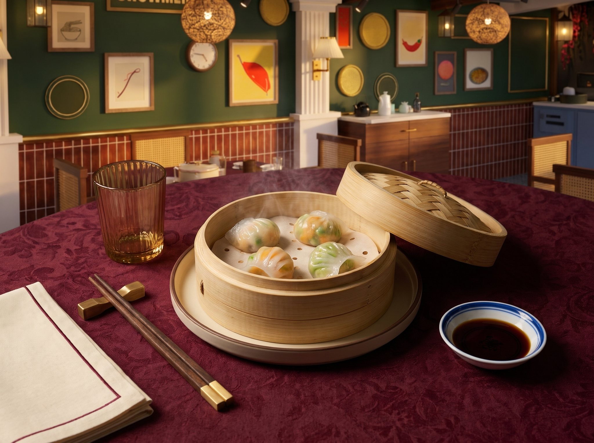

Crystal Clear
VegWater chestnut, carrot and edamame folded by hand into a glass-clear wheat-starch skin, steamed to order.
Plating 6" bamboo steamer with parchment liner on an ivory side plate, lid off at the table; blue-and-white dip dish of chilli-soy. 4 to a basket.
Price 220